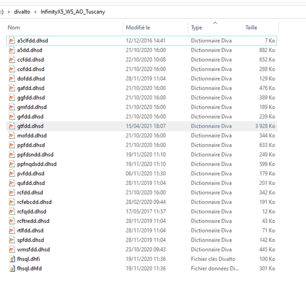
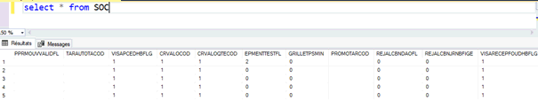
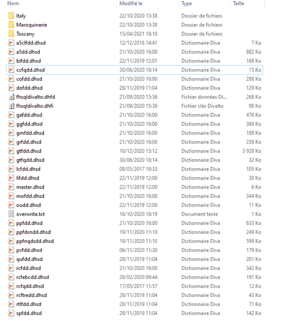
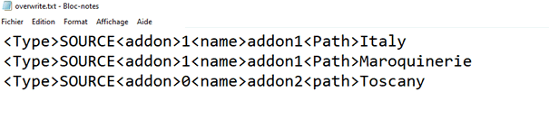
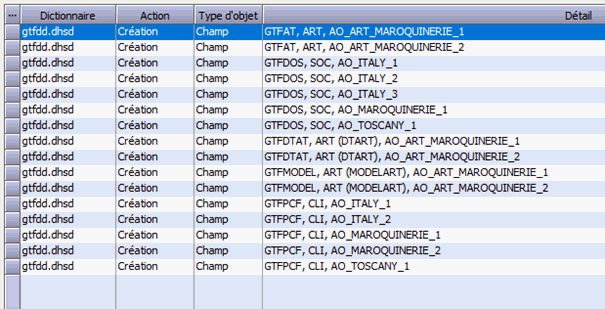
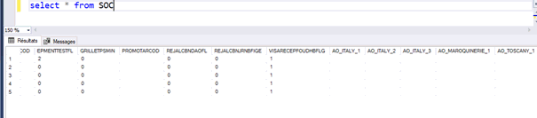
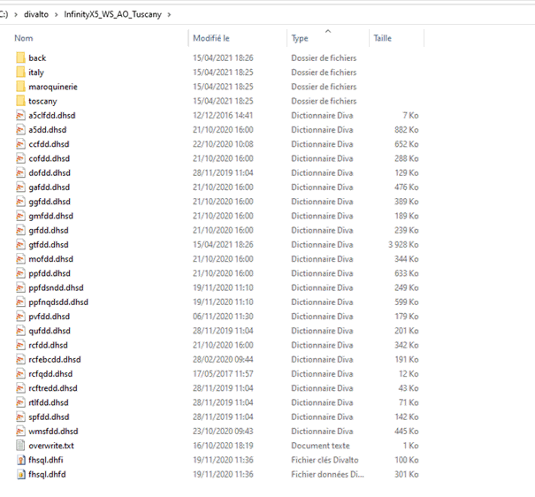

Voyons sur notre exemple de maroquinier Italien, la procédure pour la synchronisation du schéma SQL.
1 - AVANT toute opération de synchronisation.
Dans le répertoire, il n'y a aucun sous-répertoire ni de fichier overwrite.txt.

Dans la base de données il n'y a que les champs de l'ERP standard.

2 - Le répertoire à synchroniser
Il faut placer dans ce répertoire les dossiers des add-ons Italy et Maroquinerie et la surcharge spécifique du final ET le fichier overwrite.txt.
Le fichier overwrite.txt ne doit comporter que des noms relatifs (voir exemple ci-dessous)


3 - Lancement de la synchronisation
Lors de la synchronisation, XPSQL présente la liste des champs qui vont être ajoutés à la base. On voit qu'ils proviennent des différents add-ons.

Après la synchronisation, les nouveaux champs des différents add-ons sont dans la base

et le répertoire après la synchronisation devient
